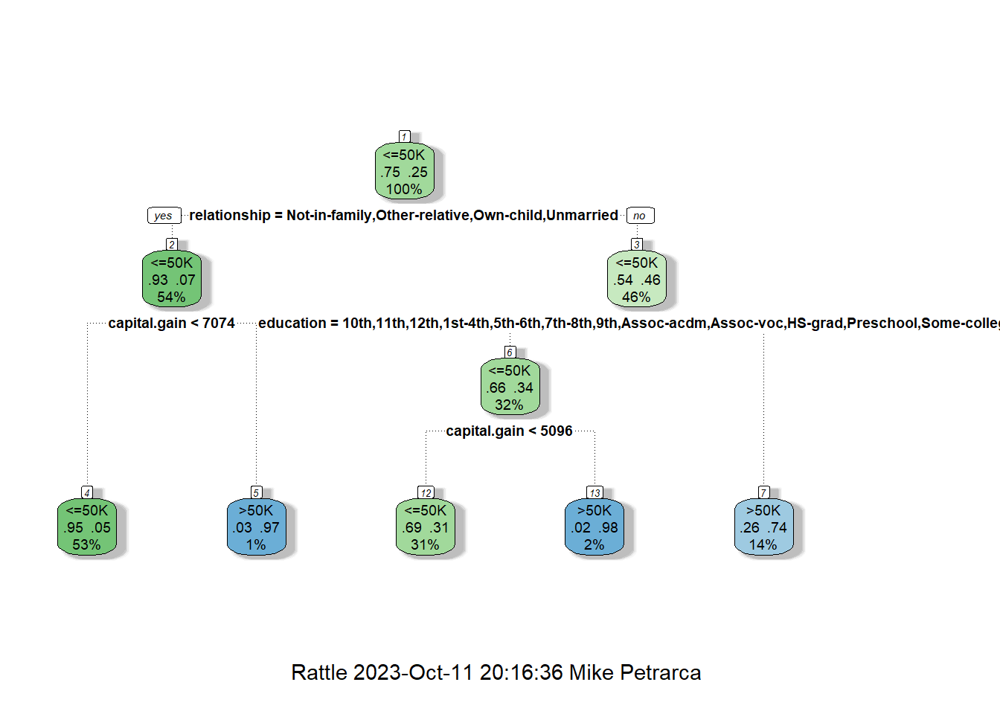
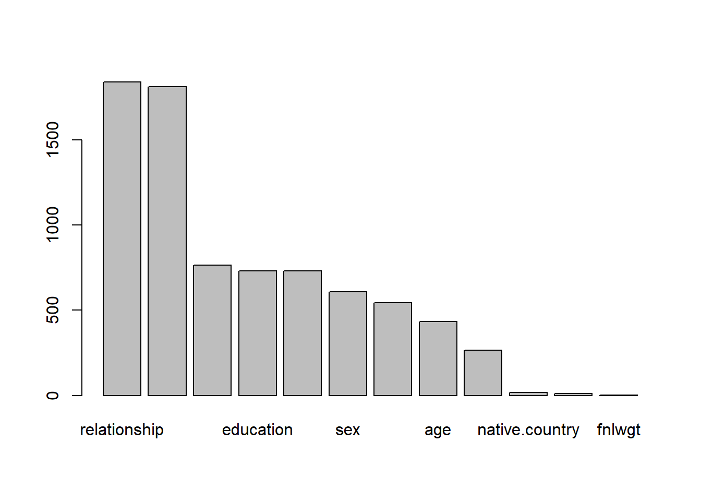
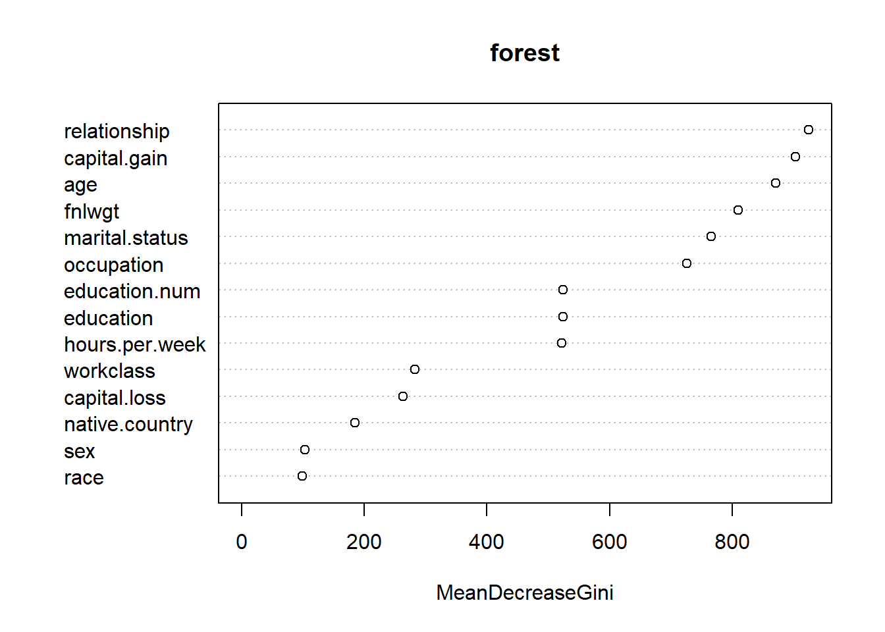

- Open the Rmarkdown file of this assignment ([link](assignment10.Rmd)) in Rstudio.
- Right under each **question**, insert a code chunk (you can use the hotkey `Ctrl + Alt + I` to add a code chunk) and code the solution for the question.
- `Knit` the rmarkdown file (hotkey: `Ctrl + Alt + K`) to export an html.
- Publish the html file to your Githiub Page.
***Submission***: Submit the link on Github of the assignment to Canvas
-------
1. Use the `Adult Census Income` dataset. We will predict the income (whether or not it is more than 50k or not) of an adult. Import the dataset. Partition the data into 80% training and 20% testing.
#Importing libraries and data, the first 80% of the rows were partitioned into the training dataset, while the remaining 20% of the rows were partitioned into the test dataset.library(tidyverse)library(dplyr)df <-read_csv('adult_census.csv')df <- df %>%rename(target = income)head(df)
#Workclass, education, marital.status, occupation, relationship, race, sex, native country, target, are all the categorical variables in the dataset. They must be converted to the class 'factor'.df <- df %>%mutate(target =as.factor(target),workclass =as.factor(workclass),education =as.factor(education),marital.status =as.factor(marital.status),occupation =as.factor(occupation),relationship =as.factor(relationship),race =as.factor(race),sex =as.factor(sex),native.country =as.factor(native.country) )
#Importing the library 'caret' and partitioning the data (80% training and 20% testing).library(caret)set.seed(2023)partition <-createDataPartition(df$target, p = .80, list =FALSE)trainDf <- df[ partition,]testDf <- df[-partition,]
2. Practice Decision Tree. Do the follows:
Use `rpart` package, create a decision tree with maximum depth of 3.
#Importing libraries and creating a decision tree on the training data with a maximum depth of 3.library(rpart)library(rattle)tree <-rpart(target ~ ., data = trainDf,control =rpart.control(maxdepth =3))tree
Calculate the accuracy of the model on the testing data. Notice that the positive outcome here is not `1` but `>50K` or `<50K`.
#Creating predictions on the testing data.prediction <-predict(tree, testDf, type ="class")#Creating a confusion matrix to test the predictions.cm <-confusionMatrix(data = prediction,reference = testDf$target, positive =">50K")cm$overall[1]
Accuracy
0.8401592
#Displaying the tree's confusion matrix.cm
Confusion Matrix and Statistics
Reference
Prediction <=50K >50K
<=50K 4301 735
>50K 229 766
Accuracy : 0.8402
95% CI : (0.8307, 0.8493)
No Information Rate : 0.7511
P-Value [Acc > NIR] : < 2.2e-16
Kappa : 0.5182
Mcnemar's Test P-Value : < 2.2e-16
Sensitivity : 0.5103
Specificity : 0.9494
Pos Pred Value : 0.7698
Neg Pred Value : 0.8541
Prevalence : 0.2489
Detection Rate : 0.1270
Detection Prevalence : 0.1650
Balanced Accuracy : 0.7299
'Positive' Class : >50K
Plot the tree
#Plotting the tree with rattle's 'fancyRpartPlot' function.fancyRpartPlot(tree)

Plot the variable importance by the tree
#Plotting the variable importance of the tree with the barplot function.barplot(tree$variable.importance)

3. Create 3 more trees and compare the testing accuracy of these trees, which tree give the highest testing accuracy.
#Partitioning the data with a different seed and creating the first tree. A confusion matrix is made, and the accuracy of the model is taken from the confusion matrix.set.seed(2550)splitIndex1 <-createDataPartition(df$target, p = .80, list =FALSE)trainDf1 <- df[ splitIndex1,]testDf1 <- df[-splitIndex1,]tree1 <-rpart(target ~ ., data = trainDf1,control =rpart.control(maxdepth =3))prediction <-predict(tree1, testDf1, type ="class")cm1 <-confusionMatrix(data = prediction,reference = testDf1$target, positive =">50K")cm1$overall[1]
Accuracy
0.8380036
#Partitioning the data with a different seed and creating the second tree. A confusion matrix is made, and the accuracy of the model is taken from the confusion matrix. This tree has the best testing accuracy of the three at ~ 0.8428.set.seed(4880)splitIndex2 <-createDataPartition(df$target, p = .80, list =FALSE)trainDf2 <- df[ splitIndex2,]testDf2 <- df[-splitIndex2,]tree2 <-rpart(target ~ ., data = trainDf2,control =rpart.control(maxdepth =3))prediction <-predict(tree2, testDf2, type ="class")cm2 <-confusionMatrix(data = prediction,reference = testDf2$target, positive =">50K")cm2$overall[1]
Accuracy
0.8428121
#Partitioning the data with a different seed and creating the third tree. A confusion matrix is made, and the accuracy of the model is taken from the confusion matrix.set.seed(1440)splitIndex3 <-createDataPartition(df$target, p = .80, list =FALSE)trainDf3 <- df[ splitIndex3,]testDf3 <- df[-splitIndex3,]tree3 <-rpart(target ~ ., data = trainDf3,control =rpart.control(maxdepth =3))prediction <-predict(tree3, testDf3, type ="class")cm3 <-confusionMatrix(data = prediction,reference = testDf3$target, positive =">50K")cm3$overall[1]
Accuracy
0.8389985
4. Practice Random Forest. Do the follows:
Use `randomForest` package, create a random forest of 1000 trees.
#Importing library and creating a forest with 1,000 trees using the argument 'ntree ='.library(randomForest)forest <-randomForest(target ~ ., data=trainDf, ntree =1000)forest
Call:
randomForest(formula = target ~ ., data = trainDf, ntree = 1000)
Type of random forest: classification
Number of trees: 1000
No. of variables tried at each split: 3
OOB estimate of error rate: 13.93%
Confusion matrix:
<=50K >50K class.error
<=50K 16893 1231 0.06792099
>50K 2131 3876 0.35475279
- Calculate the accuracy of the model on the testing data.
#Calculating the accuracy of the forest on the testing data with a confusion matrix. The accuracy is taken from the resulting confusion matrix.prediction <-predict(forest, testDf, type ="class")cm <-confusionMatrix(data = prediction,reference = testDf$target,positive =">50K")cm$overall[1]
Accuracy
0.8648649
- Plot the variable importance by the forest
#Checking the importance of the variables within the forest.importance(forest)
#Plotting the variable importance in the forest with teh 'varImpPlot' function.varImpPlot(forest)

5. Create 3 more forests and compare the testing accuracy of these forests, which forest give the highest testing accuracy.
#Creating the first random forest and a confusion matrix for the model. The accuracy is then taken from the confusion matrix.forest1 <-randomForest(target ~ ., data=trainDf1, ntree =1000)prediction <-predict(forest, testDf1, type ="class")cm1 <-confusionMatrix(data = prediction,reference = testDf1$target,positive =">50K")cm1$overall[1]
Accuracy
0.9431272
#Creating the second random forest and a confusion matrix for the model. The accuracy was then taken from the confusion matrix.forest2 <-randomForest(target ~ ., data=trainDf2, ntree =1000)prediction <-predict(forest, testDf2, type ="class")cm2 <-confusionMatrix(data = prediction,reference = testDf2$target,positive =">50K")cm2$overall[1]
Accuracy
0.9388161
#Creating the third random forest and a confusion matrix for the model. The accuracy was then taken from the confusion matrix.forest3 <-randomForest(target ~ ., data=trainDf3, ntree =1000)prediction <-predict(forest, testDf3, type ="class")cm3 <-confusionMatrix(data = prediction,reference = testDf3$target,positive =">50K")cm3$overall[1]
Accuracy
0.9424639
6. What is the best model (in term of testing accuracy) among all models (including trees and forests) you have trained?
Ans: In terms of testing accuracy, the best model that has been trained is the `forest1` model. This was the first forest made from question 5, and was created with the seed set to 2550. This model produced the highest testing accuracy of ~ 0.9439562.